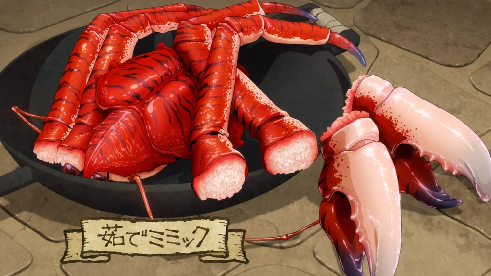
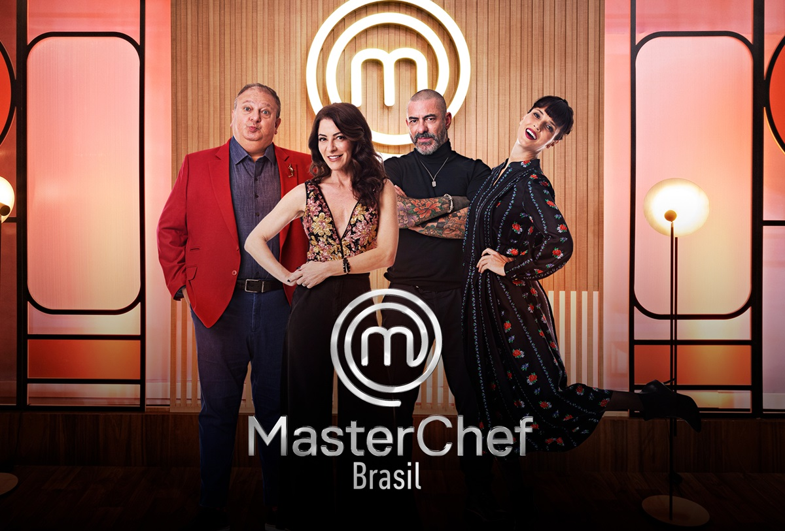

Meus objetivos

Recriar Pratos
Pratos que aparecem em séries, filmes e jogos.

Programas Culinários
Poder participar de programas como MasterChef e Bake Off Brasil para ter a experiência dentro da cozinha.
Criar Receitas Autorais
Criar receitas dos mais diversos gostos para desenvolvimento profissional e pessoal.